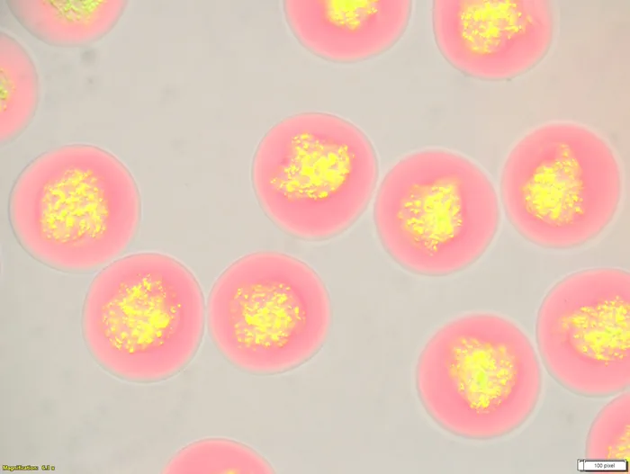
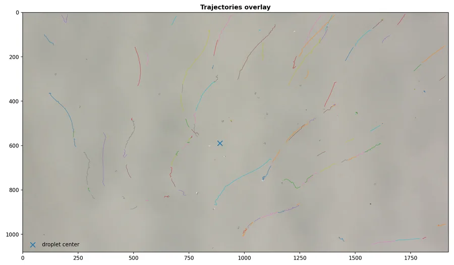
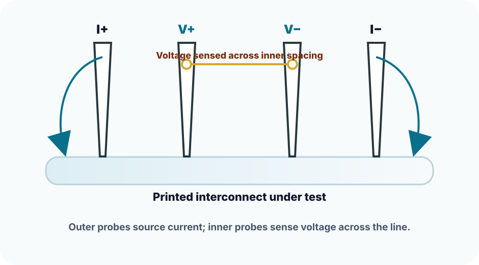
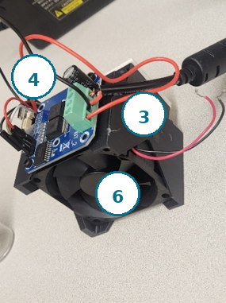
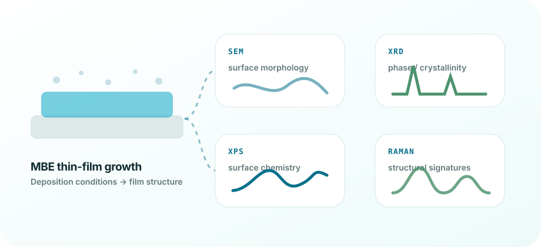
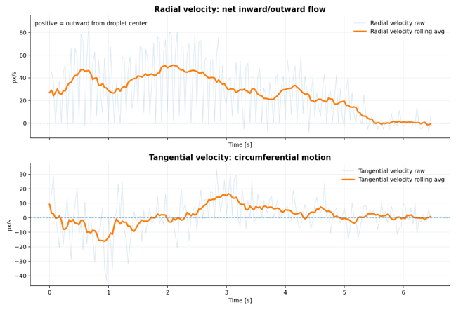

VIDEO ANALYSIS
Microdevice trajectory extraction
Video-derived pathlines of suspended microdevices relative to the droplet center for comparing radial transport, circumferential drift, and late-stage crowding across substrate/backing conditions.




Georgia Tech Chemical & Biomolecular Engineering
From printed electronics to stem-cell biotech, I build the processes that transform ideas into impact.
Technical screen artifacts
Each visual connects a physical observation to a process metric or decision.
VIDEO ANALYSIS
Video-derived pathlines of suspended microdevices relative to the droplet center for comparing radial transport, circumferential drift, and late-stage crowding across substrate/backing conditions.
MICROSCOPY
Representative microscopy from the microfluidic encapsulation workflow, used to judge capsule morphology, size distribution, and process-output quality.
CONTROL HARDWARE
Prototype hardware integrating enclosure design, fan cooling, electronics, and control logic into a testable bench system.
Engineering Case Files
I document messy systems, turn observations into metrics, and keep the next run tied to an engineering decision.
Defined the flow + crosslink window where 20× faster generation still produced usable capsules.
Outcome: 20× throughput increase and ~50% microscopy-counted usable-yield improvement.
Converted droplet videos into transport metrics for comparing substrate/backing deposition behavior.
Outcome: trajectory and velocity artifacts tied to downstream interconnect feasibility.
Mapped resistance behavior into pass, monitor, fail, and artifact classes for process feedback.
Outcome: failure categories tied back to print, cure, stress, and measurement checks.
Built controller logic around the thermal history a biological protocol actually experiences.
Outcome: ramp, overshoot, hold-stability, and repeatability checks for validation.

Linked film readouts to the process question each characterization method can and cannot answer.
Outcome: characterization matrix for deciding when a growth condition should change.

Turned microscopy videos into calibrated traces, track quality checks, and exportable process metrics.
Outcome: pipeline from raw video to radial/tangential motion and QC outputs.
Background
I learned throughput pressure on service lines before I learned transport, thermodynamics, and controls. That background makes me look for the upstream condition that creates the visible failure.
Available Fall 2026 — internships, contract sprints, founding-engineer roles.